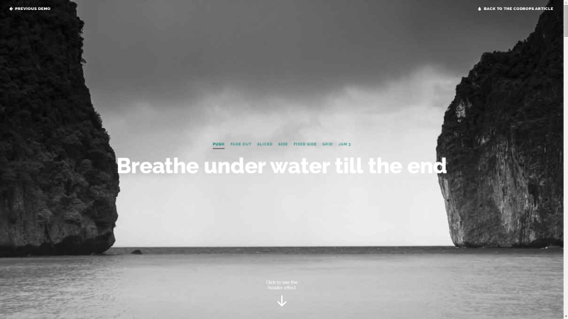
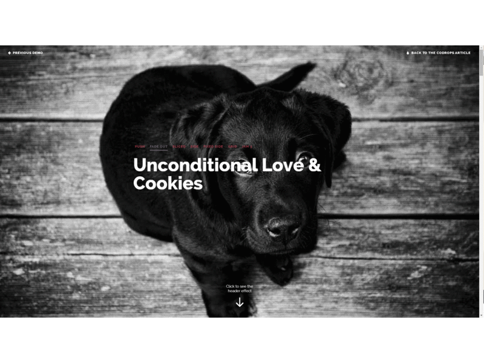
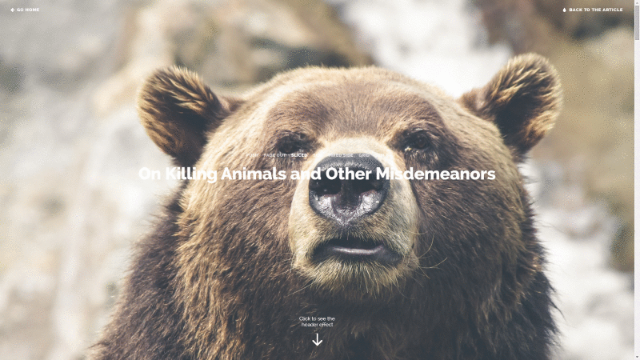
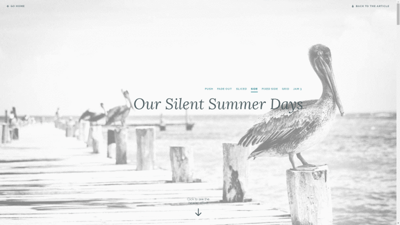
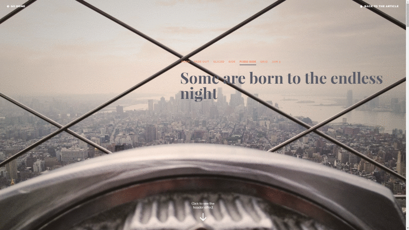
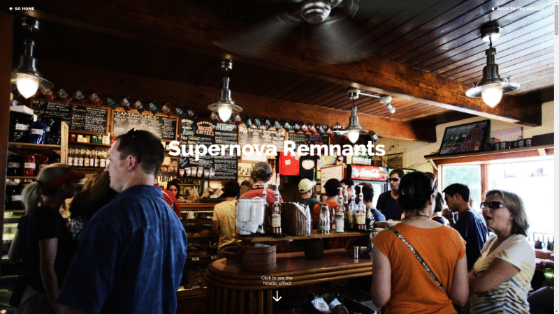

Article Intro Effects Examples
Most of the effects we tried are highly experimental; animating large images can become a bit sluggish, also because a couple of transitions happening at the same time. The effect gets triggered when scrolling begins or when the button is clicked.
The images in the demos are from amazing Unsplash, a fantastic place to find high-quality public domain photos.
You can see an example here
The first effect pushes the image to the top together with the title, and a new title element slides in with the content.

The second demo shows the effect that fades out the image at the bottom and fades in the resting content. We do this by using a pseudo element with a linear gradient.

The third effect slices the main image into two where the first half moves up and the second one slides down, giving space for the title to enlarge.

The forth effect cuts away the image and pushes the title to the side.

The fifth effect is similar to the previous one but here we fix the image to the side and allow the content to flow on the right hand side

The next demo moves the image up and reveals a grid where the current main image will scale up into the grid. This could be a great idea for showing related posts right in the header.

The last effect is an attempt to imitate the cool effect - the fullscreen image becomes a top bar and the content slides in.

SaveMyDay:
- on tympanus.net